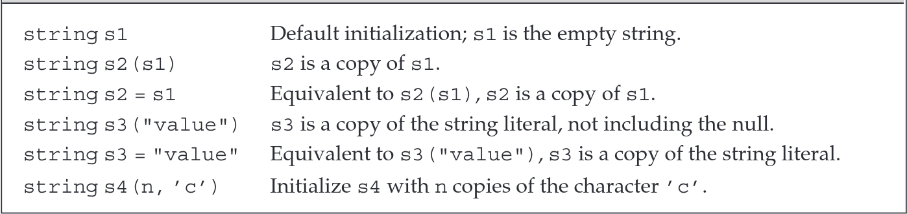
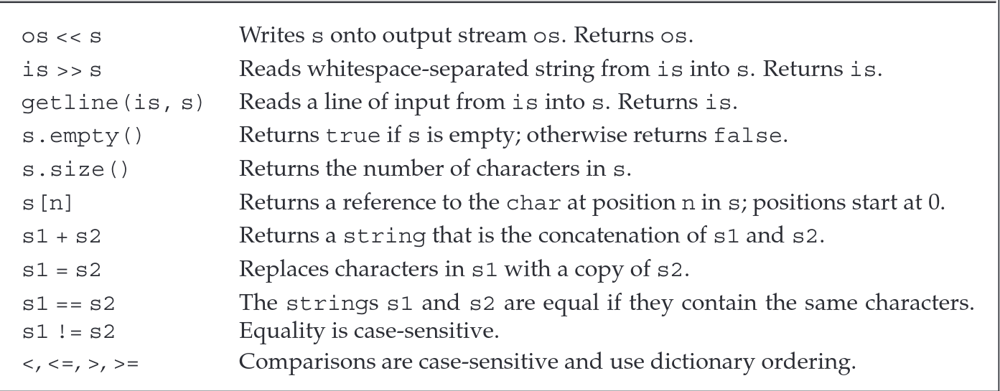
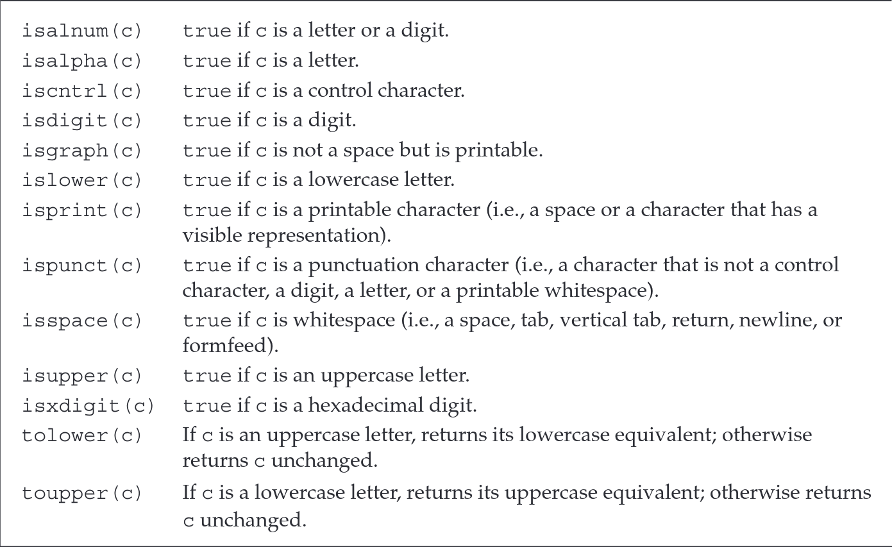
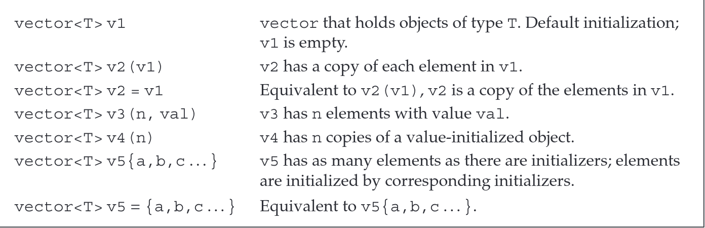
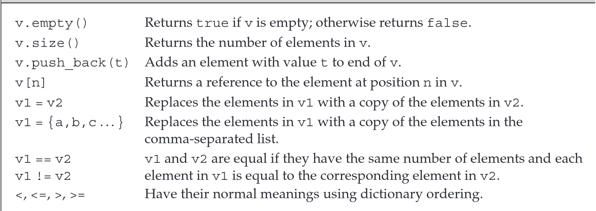
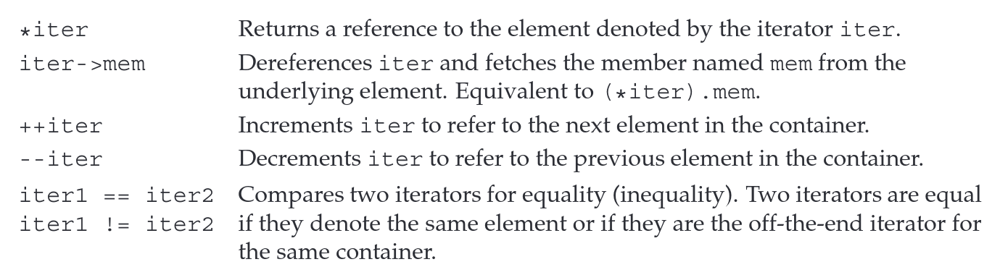
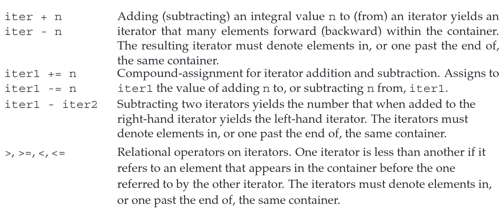

Namespace using Declarations (命名空间使用声明)
using namespace::name; // the safest way
使用using可以避免重复使用std::xxx只需要在#include之后main函数之前声明需要使用的内容即可。
#include <iostream>
using std::cin;
int mian() {
int i;
cin >> i;
cout << i; // error
std::cout << i;
return 0;
}
使用不同的类型需要单独使用using
#include <iostream>
using std::cin;
using std::cout;
int mian() {
int i;
cin >> i;
cout << i; // ok
std::cout << i;
return 0;
}
注意这种是非法的, 不允许公用一个using
using std::cin, std::cout; // error
using std::cin; using std::cout; // ok
Library string type (string类型)
string is a variable-length sequence of characters.
#include <string>using std::string
Defining and Initializing strings string的定义与初始化
初始化
string的方式string s1; // defalut initialization; s1 is the empty string 默认初始化 string s2 = s1; // s2 is a copy of s1 拷贝初始化 string s3 = "hiya"; // s3 is a copy of the string literal 字符串字面值初始化 string s4(10, 'c'); // s4 is cccccccccc注意
s3并不包含最后字符串字面值的\0结束符
注意=和()初始化是不一样的
string s3 = "hiya";
string s3(hiya);
=是copy initialization拷贝初始化()是direct initializaiton直接初始化
Ways to Initialize a string |
|---|
 |
Operations on strings string的操作
string Operations |
|---|
 |
os: output streamsis: input steams
>>和<<int main() { string s; cin >> s; // 读入的时候会忽略所有前置的空白,直到下一个读入的空白 cout << s << endl; return 0; }和内置类型的输入和输出一样处理
- 返回的也是左操作数
>>返回std::istream<<返回std::ostream- 使用
>>读入会忽略空格
getline()std::istream& getline(std::istream& is, std::string& str); // 函数签名
- 注意
getline()并非string的成员函数，而是自由函数。
getline函数接受一个输入流和一个字符串作为参数。它会从输入流中读取内容，直到遇到第一个换行符（包括该换行符），然后将读取的内容（不包含换行符本身）存储到指定的字符串参数中。当
getline遇到换行符时，无论它是输入中的第一个字符还是其他位置的字符，都会立即停止读取并返回。 如果输入的第一个字符就是换行符，那么最终存储的字符串将是一个空字符串。
int main() {
string line;
while (getline(cin, line))
cout << line << endl;
return 0;
}
empty()andsize()基本功能
empty()返回bool值，判断该string是否为空size()返回string::size_type值，计算该string的长度
- 使用
string::size_type的目的是为了实现与机器无关- 但可以肯定的时候其一定是一个无符号类型
- 要注意和
int计算的时候，int会被强制转换为unsigned int
Comparing string : ==, !=, >, >=, <. <=
- 大小写敏感
- 按照字典序比较
- 比较的基本规则
- 若两字符串长度不同，且较短字符串中的每个字符均与较长字符串中对应位置的字符相同，则较短字符串小于较长字符串。
- 若两字符串在任意对应位置上的字符存在差异，则字符串比较的结果由首个不同字符的比较结果决定。
string类的赋值与
+
string可以和bulit-in类型一样直接用一个string给另一个string赋值string s1 = "happy", s2; s2 = s1; // now, s1 and s2 are "happy";
string类允许+和+=操作，和内置类型保持一样的逻辑string s1 = "happy", s2 = "world"; string s3 = s1 + s2; // now s3 is "happyworld"; s1 += s2; // now s1 is "happyworld";
string类与字符串字面值的加法(注意)
- 必须有一个操作数为
string才合法string s4 = s1 + ", "; // ok string s5 = "hello" + ", "; // error: no string operand string s6 = s1 + ", " + "world"; // ok string s7 = "hello" + ", " + s2; // error
s7不可以的原因为，其实际上可以认为是如下两部分的组合string s7 = ("hello" + ", ") + s2;而第一部分是两个字面值相加，其操作非法
Dealing with the Characters in a string
C++从C标准库继承而来的库，一般会使用
c+name的名字命名且移去后缀.h，同时其所有内容都位于命名空间std中，但如果使用.h的方式导入，则不保证所有的函数\变量位于std的命名空间内。所以，对于所有从C继承而来的库，都应该按照cname的方式导入。
cctypeFunctions |
|---|
 |
C11 — Range-Based for
for (declaration : expression)
statement;
对于string对象，可以按照如下方式遍历每一个字符
stirng str("some string");
for (auto c : str)
cout << c << endl;
一个更复杂的例子
string s("Hello World!!!"); // 定义字符串s并初始化
// punct_cnt的类型与s.size()返回类型相同（参见第2.5.3节第70页）
decltype(s.size()) punct_cnt = 0; // 标点计数器初始化
// 统计字符串s中的标点符号数量
for (auto c : s) // 遍历s中的每个字符
if (ispunct(c)) // 若当前字符是标点符号
++punct_cnt; // 标点计数器自增
// 格式化输出结果
cout << punct_cnt << " punctuation characters in " << s << endl;
- 使用
decltype推断表达式s.size()的返回值类型string::size_tyep
使用reference和范围for循环修改string的每一个字符
string str("hello world");
for (auto &c : str)
c = toupper(c);
cout << str << endl;
// The output of this code is
HELLO WORLD
注意点
- 虽然看上去是
c每次重新绑定了str[i]，但引用是不支持重新绑定的，所有其实是{ auto &c = str[0]; .... } { auto &c = str[1]; ..... } .....每次迭代的
c都是全新的c
Library vector template (vector模板)
vectoris a collection of objects, all of which have the same type.#include <vector> using std::vector;
vector是模板(class template)，可以通过如下方式进行实例化(instantiation)vector<int> ivec; // ivec holds objects of type int vector<Sales_item> Sales_vec; // Sales_vec holds objects of type Sales_item vector<vector<string>> file; // vector whose elemnets are vectors
注意
vector是模板(template)但vector<int>是类型(type)- 注意由于
reference并非一个对象，所以不存在使用引用实例化的vectorvector支持变长
一个旧标准和新标准的细微差距
// 使用vector实例化另一个vector的区别
vector<vector<int> >; // 旧标准需要一个空格
vector<vector<int>> ; // C++11之后并不强制要求
Defining and Initializing vectors 定义和初始化vector
vector<string> svec; // 默认初始化，全空
vector<int> ivec;
vector<int> ivec2(ivec); // 拷贝初始化
vector<string> svec(ivec2); // error: 类型不匹配
// C++11
vector<string> articles = {"a", "an", "the"}; // 列表初始化
vector<string> articlse{"a", "an", "the"}; // ok
vector<string> articlse("a", "an", "the"); // error: 不能使用()进行列表初始化
// 创建含有指定初始容量和初始内容的vector
vector<int> ivec(10, -1); // 十个元素，没个元素都是-1
vector<string> svec(10, "hi!"); // 十个元素，每个元素都是hi!
// 创建指定初始容量但不指定初始内容的vector
vector<int> ivec(10); // 十个元素，全都是0
vector<string> svec(10); // 十个元素，全都是空字符串
- 部分类需要明确的显示初始化才可以
注意这个初始化是非法的
vector<int> vi = 10; // error: must use direct initialization to supply a size
总结：vector的初始化方法 |
|---|
 |
Adding Elements to a vector
push_back()操作
vector<int> v2;
for (int i = 0; i < 100; i++) {
v2.push_back(i);
}
特别需要注意：在范围for循环中，并不允许使用push_back()动态扩容！具体原因见p188 Lterative Statements
Other vector Operations
vector Operations |
|---|
 |
注意和string类一样size()返回的类型并非是单纯的int或者其他内置类型而是vector<T>::size_type
英文原文为：To use size_type, we must name the type in which it is defined. A vector type always includes its element type.
在大部分情况下都可以使用[]+下标的方式访问vector内的元素，但要注意这种方法并不会进行动态扩容，需要动态扩容只能使用push_back()或者手动调整vector的大小(resize)。
vector<int> ivec;
for (decltype(ivec.size()) ix = 0; ix < 10; ix++) ivec[ix] = ix; // error
for (decltype(ivec.size()) ix = 0; ix < 10; ix++) ivec.push_back(ix); // ok
Introducing Iterators(引入迭代器)
迭代器与指针
- 都是间接访问元素
- 在如下两种情况都是有效的
- 指向一个元素
- 指向一个一个元素的后一个位置
- 但迭代器不可以指向空，而指针可以指向空
Using Iterators
一般获取迭代器并不通过取地址获得，而是通过含有迭代器的容器提供的方法，比如说begin()和end()
vector<int> v;
auto b = v.begin();
auto e = v.end();
// b and e have the same tyep
如果容器为空，则begin()和end()返回相同的迭代器，均为off-the-end iterators
| Standard Container Iterator Operations |
|---|
 |
一个习惯问题
原文
Programmers coming to C++ from C or Java might be surprised that we used != rather than < in our for loops such as the one above and in the one on page 94. C++ programmers use != as a matter of habit. They do so for the same reason that they use iterators rather than subscripts: This coding style applies equally well to various kinds of containers provided by the library. As we’ve seen, only a few library types, vector and string being among them, have the subscript operator. Similarly, all of the library containers have iterators that define the == and != operators. Most of those iterators do not have the < operator. By routinely using iterators and !=, we don’t have to worry about the precise type of container we’re processing.
简单来说就是C++程序多使用
!=而非<来作为for循环判断的条件，原因为C++程序员多习惯使用迭代器而非下标（大部分容器其实没有下标访问，但都有迭代器），而大部分迭代器并不支持<运算符，但都支持!=运算符。
关于begin()和end()的类型
- 若原容器不含
const则迭代器类型也不含 - 否则迭代也会是带
const
vecotr<int> v;
const vector<int> cv;
auto it1 = v.begin(); // it1 has type vecotr<int>::iterator
auto it2 = cv.begin();// it2 has type vecotr<int>::const_iterator
auto it3 = v.cbegin(); // its has tyep vector<int>::const_iterator
迭代器和.成员运算符的优先级问题
(*it).empty(); // 先解引用再使用empty()
*it.empty(); //先使用empty()再解引用 error
使用箭头->运算符
for (auto it = text.cbegin(); it != text.cend() && !it->empty(); it++)
cout << *it << endl;
如果循环中使用了迭代器，就绝不能向该迭代器所指向的容器添加元素。
Iterator Arithmetic(迭代器算术)
| Operations Supported by vector and string Iterators |
|---|
 |
iter1 - iter2其值类型为difference_type表面的是第一个迭代器需要经过多少次++或者--操作才能达到第二个迭代器
difference_type是有符号类型
// text must be sorted
// beg and end will denote the range we're searching
auto beg = text.begin(), end = text.end();
auto mid = text.begin() + (end - beg) / 2; // original midpoint
// while there are still elements to look at and we haven't yet found 'sought'
while (mid != end && *mid != sought) {
if (sought < *mid) { // is the element we want in the first half?
end = mid; // if so, adjust the range to ignore the second half
} else { // the element we want is in the second half
beg = mid + 1; // start looking with the element just after mid
}
mid = beg + (end - beg) / 2; // new midpoint
}
Arrays(数组)
数组是从c继承而来的，性质大部分相同。
Defining and Initializing Built-in Arrays
Arrays are a compound type
数组一般按照a[d]的样子进行初始化，其中a为数组类型，d为数组容量。注意d必须是得在编译期间就能确定的常量有两种方法实现
- 使用
constexpr定义变量，强制其在编译期确定值constexpr v = 100; int arr[v]; // ok - 使用
const并用字面值初始化该变量const int N = 110; int arr[N]; // ok const int N1 = rand(); int arr1[N1]; // error
const char str[6] = "Daniel"; // error: no space for the null!
int a[] = {0, 1, 2};
int a2[] = a;// error: cannot initialize one array with another
a2 = a; // error: cannot assign one array to another
int &refs[10]; // error: no arrays of references
// 数组内的元素必须是对象
int *ptrs[10]; // ok: 存放了10个int*的数组
// 数组本身是一个对象可以被指针指向也可以被引用
int (*Parray)[10] = &arr; // ok: 指向一个存有10个元素的int数组
int (&arrRef)[10] = arr; // ok: 对一个int数组的引用
int *(&arry)[10] = ptrs;
// array ---> 名字
// & ---> 引用
// [10] --->数组
// int * --->int指针
// 组合起来就是：arry是一个引用，对一个容量为10给int *类型的数组的引用。
Accessing the Elements of Array
- 支持
[]访问- 但编译器不保证访问范围的合理性，需要程序员自己保证！
- 支持
范围for循环
Pointers and Arrays
C++毕竟是从C发展而来，也继承了指针和数组的关系
- 数组名为指向数组首元素的地址
string nums = {"one", "two", "three"};
string *p1 = &nums[0];
// 与下面是等效的
string *p2 = nums;
auto sa1(nums); // sa1的类型是 string *
decltype(nums) sa2; // sa2是一个包含三个元素的string数组
[]操作本质是指针运算- 即是指针运算的语法糖罢了
string one = nums[0];
// 等价于
string one = *(nums);
string two = nums[1];
//等价于
string tow = *(nums + 1);
int ia[] = {0,1,2,3,4,5,6,7,8,9}; // ia is an array of ten ints
int *beg = begin(ia); // pointer to the first element in ia
int *last = end(ia); // pointer one past the last element in ia
和迭代器的begin()和end()行为一致，begin()返回指向第一个元素的指针，end()返回指向最后一个元素下一个位置的指针。
int *p = &ia[2]; // p points to the element indexed by 2
int j = p[1]; // p[1] is equivalent to *(p + 1),
// p[1] is the same element as ia[3]
int k = p[-2]; // p[-2] is the same element as ia[0]
原因在于数组的下标元素是指针运算，其由C++决定，而vector和string由其库决定，而库内规定了索引必须是非负数。
Interfacing to Older Code
任何以\0结尾的字符数组，都可以当作字符串字面值使用
- 可以通过该数组初始化string
- 可以作为操作数与string进行加减操作
可以使用c_str()函数将返回一个指向string的C-style风格的指针，但需要注意其有如下注意事项
- 返回的类型为
const char *- 不可以通过该指针修改
string的内容
- 不可以通过该指针修改
- 如果
string内容发生修改，该指针将会无效
可以使用array初始化一个vector
使用begin()和end()两个指针确定array的有效范围
int int_arr[] = {0, 1, 2, 3, 4, 5};
// ivec has six elements; each is a copy of the corresponding element in
int_arr vector<int> ivec(begin(int_arr), end(int_arr));
当然也可以按如下方法使用数组的某一部分初始化vector
// copies three elements: int_arr[1], int_arr[2], int_arr[3]
vector<int> subVec(int_arr + 1, int_arr + 4);
Multidimensional Arrays(多维数组)
并没有啥多维数组，有的只有数组嵌套。
| 循环层级 | 控制变量类型 | 原因 |
|---|---|---|
| 最外层 | 引用（auto &） |
避免外层数组退化为指针。 |
| 中间层（如有） | 引用（auto &） |
保持嵌套数组结构，确保内层可遍历。 |
| 最内层 | 可引用或值（auto） |
最内层是基本类型（如int），是否引用取决于是否需要修改元素。 |
int cube[2][3][4];
for (auto &layer : cube) // 引用：避免退化为int(*)[3][4]
for (auto &row : layer) // 引用：避免退化为int*
for (auto &elem : row) // 可引用或值（int&或int）
elem = 0; // 修改元素
但如下代码就错误了
for (auto row : ia) // row退化为int*
for (auto col : row) // 非法：int*不能用于范围for